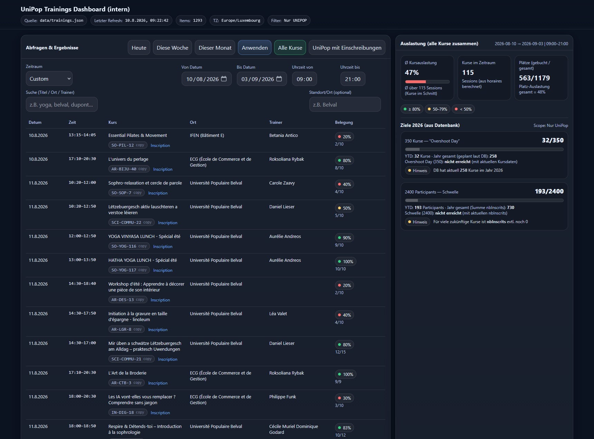

Frank's Magic
A custom UniPop web tool designed to search, explore and reuse course information from the central course data source.
Overview
Frank's Magic is a browser-based tool created to make UniPop course information easier and faster to access.
Instead of searching manually through different systems or individual course pages, the application provides a central interface for exploring the available course data and quickly finding the information required for other UniPop projects and communication tools.
Project details
The project started from a practical need: UniPop manages a large and continuously changing catalogue of courses. Information such as course titles, descriptions, dates, locations, categories and other details is used repeatedly across different communication channels and internal tools.
Frank's Magic provides a faster way to access this information through a dedicated web interface. Course data can be searched, filtered and displayed without manually opening individual course pages.
The tool also acts as a useful bridge between the central course data and several other projects. By providing structured access to course information, the same data can be reused for applications such as newsletters, digital signage and other UniPop communication workflows.
Central course access
Course information is brought together in one interface, making it easier to explore the current UniPop catalogue.
Fast search
Courses can be located quickly without manually browsing through individual pages or administrative systems.
Filtering
Structured course data makes it possible to filter and identify relevant courses according to the information available in the data source.
Reusable data
Course information can be reused by other UniPop tools instead of manually recreating the same content.
Browser based
The application works directly in a modern browser and does not require locally installed software.
Shared data source
Using structured course data provides a common foundation for several independent UniPop digital projects.
Technology
Frank's Magic is built as a lightweight web application using HTML, CSS and JavaScript. The frontend provides the search, filtering and presentation interface while structured course data supplies the information displayed by the application.
The project is designed around reusable web technologies and structured data rather than a traditional locally installed application. This makes the tool easy to update and allows the same course information to be integrated into additional UniPop projects.
The data-driven architecture is particularly useful for projects that need access to the latest course information, such as newsletter creation, digital signage and other communication tools.